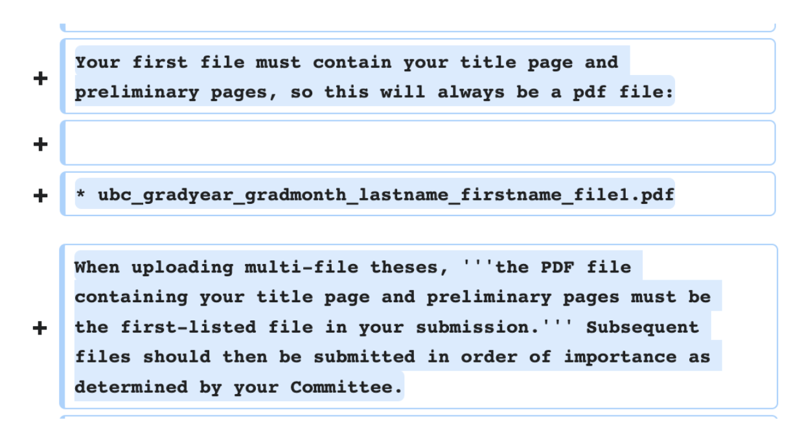
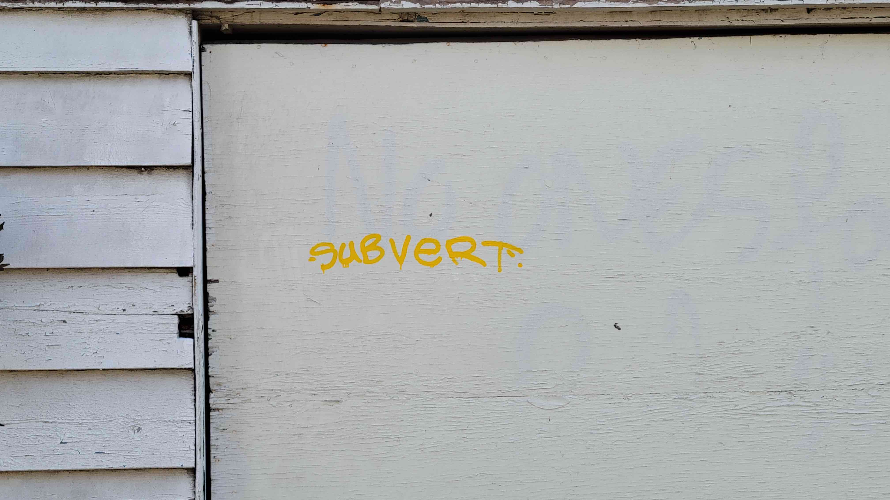
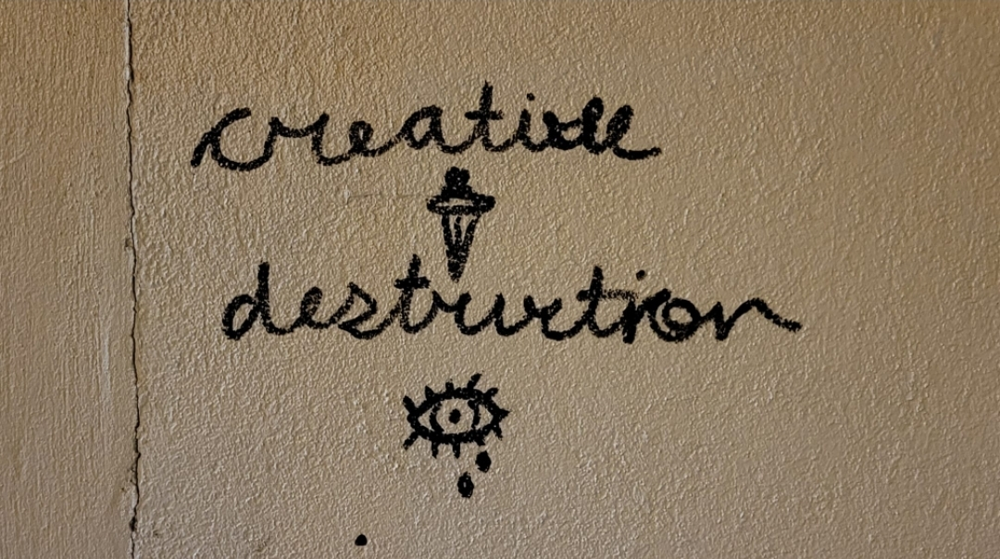
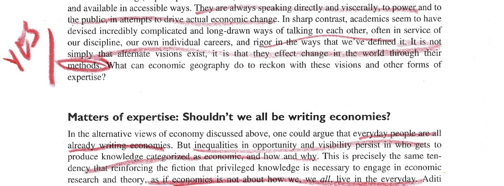
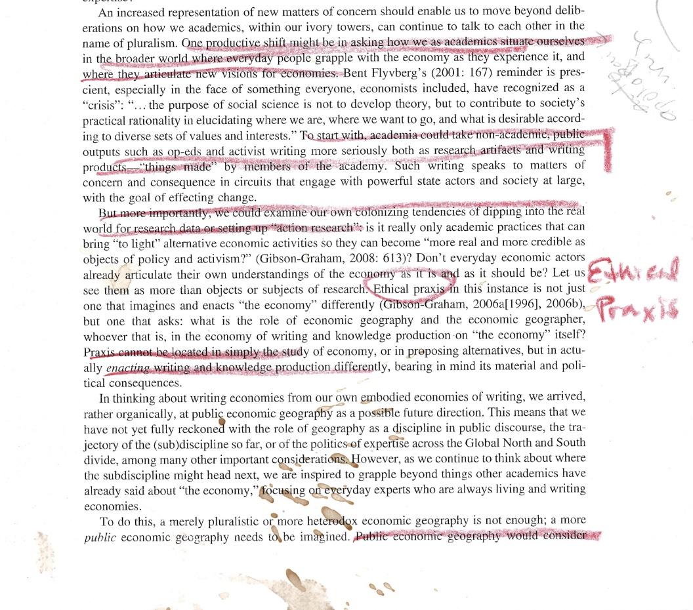
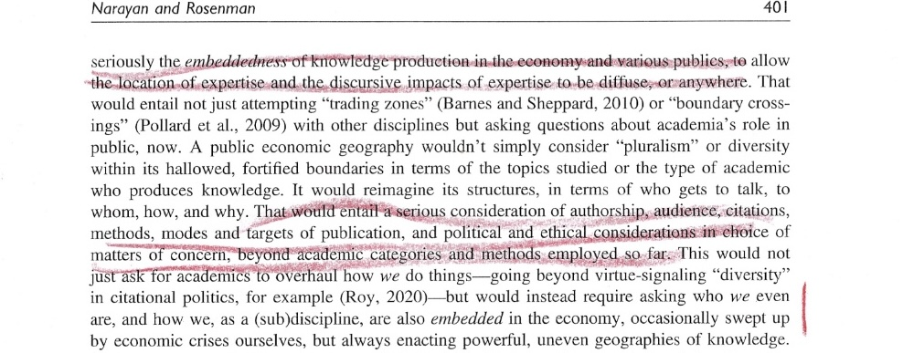
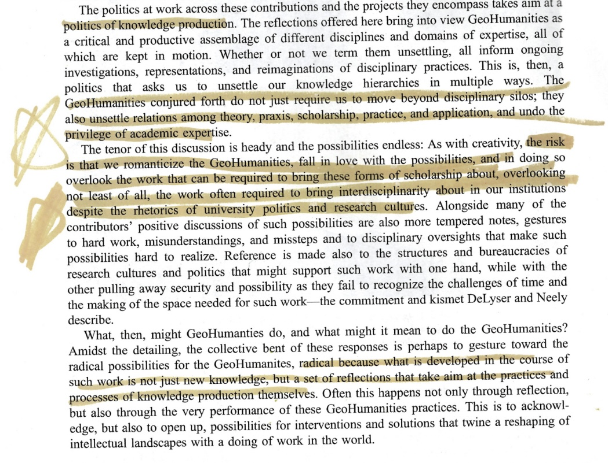

How, then, might the effect of interferences be marked while accounting for the apparatus of their production? In other words, how might knowledge generated through everyday spatial practices be rendered without being flattened, georeferenced, or vectorized? This page is an account of the form and formation of negative-spaces––the website which marks the effects of my deep mapping practice and constitutes the contents of what I will submit as my master’s thesis in geography. In what follows, I articulate how making space for deep mapping renders theory as praxis. In doing so, I attend to the exclusions entailed in defining my research output and rendering it intelligible to the sociotechnical system of institutional publishing whose archival will performatively render my research-creation legible as a thesis.
INSTITUTIONAL FORMALITIES
I will submit as my master’s thesis in geography a file entitled ubc_2024_may_CrandallOral_LilyDemet_negative-spaces.zip. What’s in a filename turns out to matter quite a bit, so the following section will break down this concatenation and how my submission interferes with formal convention. cIRcle (circle.ubc.ca) is the institutional repository for The University of British Columbia (UBC) where I am pursuing a Master of Arts (MA) degree in geography. The mandate of cIRcle is to preserve archived material in perpetuity, a commitment reiterated by the default date range to search the repository’s open collection being 1982 BCE to 2023 (“Search - UBC Library Open Collections” n.d.). UBC began accepting electronic theses and dissertations (ETDs) through a pilot project in 2007 and now requires all theses and dissertations be submitted electronically to cIRcle. From the perspective those spearheading the endeavor, this marks a shift from the Dark Ages of thesis submission and archiving to The Age of Light (Read and Sprout 2009). The collaboration between UBC Library and the Faculty of Graduate and Postdoctoral Studies responsible for the initiative persists today, though continues to form a complex sociotechnical system in which “acceptance” and “approval” of submissions is a distributed decision. This is especially true, I learned, when it comes to proposed formats for which there is no technical precedent.
There has never been a thesis in the form of a website at UBC.
Because deep mapping is a practice of interference, not opposition, I initiated a conversation with the Associate Director of Student Academic Services and the Public Scholarship Coordinator within the Faculty of Graduate in Postdoctoral Studies to find a way for my thesis output to be archived by cIRcle well before my intended time of submission. As it stood the afternoon of July 13th, 2023 at the time of the meeting, in order for theses and dissertations to be accepted by cIRcle’s submission platform they were required to be uploaded in the format ubc_gradyear_gradmonth_lastname_firstname.pdf (“Library:Circle/Uploading Electronic Theses and Dissertations - UBC Wiki” 1-18-2023). Upload of auxiliary multimedia was and continues to be an option, as “cIRcle can technically accept all file formats” (“Library:Circle/File Format Guidelines - UBC Wiki” 2023). Searching cIRcle’s collection of MA and MSc (Master of Science) theses (“Search - UBC Library Open Collections” n.d.), I found a handful of theses with supplementary files. In addition to the text thesis in .pdf form, archived MA thesis included still images (as .gif files), moving image/audiovisual (as .m4v and .mp4 files), datasets (as .csv, .sav, .txt, and .zip files), and sound/audio (as .zip, .wav, and .mp3 files). Supplementary datasets, models, and software were more prevalent amongst MSc submissions, archived as .zip, .mp4, and, .xlsx files. However, all multimedia were submitted as secondary to a ubc_gradyear_gradmonth_lastname_firstname.pdf formatted upload. In conversation with the Associate Director of Student Academic Services and the Public Scholarship Coordinator on July 13th, 2023, I indicated hesitance over submitting any .pdf file since my entire thesis is rendered by my website, to which their response was that they were not convinced and, more importantly, I would have build an argument to “convince” The Faculty of Graduate and Postdoctoral Studies as to why inclusion of a few page .pdf would distort my thesis. They held that the first few pages of the text .pdf contain vital metadata. This despite my proposed website containing these requirements (title page, committee page, abstracts), and my reiteration that an abstract and metadata––including title, creator, supervisor, publisher, date issued, description, degree, program, affiliation, graduation date, and degree grantor––are all manually entered to cIRcle upon a submission upload, and displayed for each archived thesis alongside the downloadable thesis file(s). To this, they cited convention––theses at UBC have ‘always’ been submitted with a linear text component.
The bottom line, I gathered, was that while multimedia files can technically be accepted by cIRcle’s infrastructure and there is no formal rule that ETDs must be submitted with a .pdf, the linear text .pdf is what makes a submission legible, or “acceptable,” to The Faculty of Graduate and Postdoctoral Studies as a thesis. That is, until four hours after our conversation. Four hours after I spoke with representatives of The Faculty of Graduate and Postdoctoral Studies on July 13th, 2023, the UBC Library webpage for uploading ETDs to cIRcle, which hadn’t been updated in six months, was refigured to include upload instructions and requirements to account for multi-file theses. The new mandate requires a .pdf file be the primary document uploaded (see site 1). All other multimedia uploads, including .zip files, are now determined to be secondary to the .pdf (“Library:Circle/Uploading Electronic Theses and Dissertations: Difference between Revisions - UBC Wiki” 7-13-2023). Below is an excerpt from the full history log of that day.

Site 1. Screenshot of the revisions to “Library:Circle/Uploading Electronic Theses and Dissertations made as of 18:20, 13 July 2023. A few of the additions, which can be viewed publicly by navigating to the history of the UBC Wiki page, are as follows: Your first file must contain your title page and preliminary pages, so this will always be a pdf file: ubc_gradyear_gradmonth_lastname_firstname_file1.pdf. When uploading multi-file theses, the PDF file containing your title page and preliminary pages must be the first-listed file in your submission. Subsequent file should then be submitted in order of importance as determined by your Committee.
So I am left with the decision of what to do. In a voice recording taken while driving the Coquihalla Highway back to Vancouver days before the meeting I said: “It's less about the specific output form of my website and more about the process of interfering with the cIRcle system from within by proposing this.” This is not to say my chosen form doesn’t matter, but rather, in a Baradian (2007) vein, how it comes to matter is the result of boundary making practices through which the boundary of what the hegemonic system determines to be an intelligible (read “acceptable”) form becomes articulate.
Full audio recording taken on ride back before meeting, July 2023
NEGATIVE SPACES
I will submit as my master’s thesis in geography the file ubc_2024_may_crandalloral_lilydemet_negative-spaces.zip, along with a brief PDF with metadata, the last page of which details how to download and unzip the compressed file in order to enter negative-spaces. Why locate my work in negative-spaces? The idea was inspired by a sticker on a lamppost I noticed while thinking with an intersection downtown (see site 2). It read: AVOID THE SUBJECT.
Site 1. Screenshot of the revisions to
Site 2. Sticker on lamppost somewhere downtown Vancouver reading AVOID THE SUBJECT. Photograph by author.
In visual art, negative space refers to that which surrounds the subject but is not the intended focus of attention. I know this concept from years of practical experience as a painter. Negative space gives definition to the intelligible form by being that which the intelligible form is not––the unintelligible. The boundary, or difference between intelligible and unintelligible is articulated in the instant that which the intelligible form excludes shows up in the space of the intelligible. Negative space and the intelligibility are in relation not of opposition but of complementary constitution––an entanglement I believe to be analogous to (if not the same as) Foucault’s (1977) rendering of limit and transgression. Writes Foucault, “transgression carries the limit right to the limit of its being; transgression forces the limit to face the fact of its imminent disappearance, to find itself in what it excludes…” (Foucault 1977, 34). Interference at once articulates difference and redraws boundaries by bringing what was previously unintelligible into focus. Locating my thesis in negative-spaces brings to the fore forms of knowledge production and rendering spatial research public that are institutionally rendered outside the norm. And, in doing so, enacts an interference which redraws the definition of possibility. It’s not one against another (opposition) but a Baradian 'intra-action' which reveals the limit through the transgressive act of proposing alternative framings. This is the work of reconfiguring boundaries. I turn now to the configuration of my thesis and its configured form.
FORMAL RE/CONFIGURATIONS
The filetype is .zip, meaning my submission is a compressed folder. In the case of my thesis, the compressed (zipped) folder contains files of heterogenous types (.html, .css, .md, .txt., .png, .jpeg, .jpg, .mp3, .mp4, .ttf, .zip, .pdf) sorted into additional folders, some containing subfolders themselves. The .zip format therefore assembles a multitude of files into one element. Once archived by cIRcle, to explore my MA thesis a visitor will need a computer, internet connection, and web browser––infrastructure all required to access circle.ubc.ca in the first place. From circle.ubc.ca, the repository’s public-facing graphical user interface (GUI), a visitor would then navigate to theses and dissertations where they would find my thesis using relevant search terms. They would then download ubc_2024_may_crandalloral_lilydemet_negative-spaces.zip. Once downloaded, the .zip file is located “locally” on their personal computer, likely in user/downloads. This as opposed to it being stored “remotely” on cIRcle servers.
The .zip folder is a “release”––a version in time or instantaneous configuration of the assorted files constitutive of the website negative-spaces.github.io, hosted by Github. Github is a platform conventionally used for managing code development for software projects. It’s a popular site for team work because collaborators can work asynchronously on a project by “cloning” it to their local device and then “pushing” their changes to the remote project hosted by Github. What’s key is that Github integrates git, a version control software which allows users to track changes made to files and handle complex merges in the case of multiple collaborators pushing changes to the same document. I was initially inspired to appropriate the conventional use of Github by sultanazana.github.io, whose “network of webpages will grow more tangled with time” (Zana n.d.). I also chose Github as the host platform for the development of my thesis site because it provided a means to render visible the iterative process of my research-creation. While the website located at negative-spaces.github.io will remain as long as Github exists, I made the decision to submit as my thesis a release of the site so that what is rendered as my thesis is materially archived within cIRcle. This means the ‘commit history’––an archive of each document as it was changed and a diffraction pattern of the site’s iterative formation––is not included as part of my institutionally rendered thesis. However, this element of process can still be accessed at github.com/negative-spaces/negative-spaces.github.io/commits/main/ for those curious.
Once downloaded, the contents of a zipped folder are not immediately accessible. As you may know from practical experience, in order to access the contents of a .zip file you must first unzip or otherwise extract the compressed folder. A now-common way to do this is to right-click the .zip file and choose an extraction software with which to unzip the file. If the computer is set up to automatically recognize a .zip file and extract its contents upon double-clicking, that is an option too. The extracted folder is named negative-spaces. The folder negative-spaces contains the .html documents which, once read by web browsers, comprise what’s read by browsers of my web site. It also contains the Cascading Style Sheet (.css file) responsible for the rendered look and feel of my website. Images, video, and audio files are organized into subfolders of negative-spaces, linked by specific file paths that embed them as relevant throughout the html pages.
negative-spaces is a partial account of an ongoing and open-ended conversation, one which invites the visitor to engage as interlocutor. How, then, might one enter into dialogue? Within the folder negative-spaces, right click any of the .html files and “open with” your default web browser. (Note: all these instructions will be detailed in the embedded metadata beside my thesis in cIRcle, as well as included in a README.txt file within the unzipped folder). In this way, my thesis is intra-actively rendered. While negative-spaces is an instantaneous configuration of files, each in a necessarily distinct location, navigation spatializes it, producing a webbed site itself a space for deep mapping, for nonlinear exploration following ideas that grasp and pull the visitor. For evaluating supervisors and those desiring a guided tour, I have ordered the menu by my recommended navigation.
Upon intra-active production of the digital space, the visitor will find multimedia, rather than relegated to secondary material or the appendix of a .pdf, integrated directly with text on the page. As Cliffard McLucas (2000) said, what’s rendered of deep mapping “will be genuinely multimedia, not as an aesthetic gesture or affectation, but as a practical necessity.” Rendering in the digital form allows me to build for a variety of creative syncretisms such as parataxis (placing elements side by side), montage (juxtaposition of disparate elements), and commonplacing (an arrangement of resonant quotes) (Cresswell 2019). Take for example my page on practice, negative-spaces/practice.html, which traces my theorization of deep mapping by setting up a dialogue between the physical and conceptual fields of my encounter. I format this conversation as digital commonplace: embedded on the left are passages from the conceptual field; on the right, interpretations of deep mapping generated through navigating Vancouver. The form of practice.html is therefore akin to my practice of deep mapping. The interlocutor is invited to think through practice in order to arrive at a situated theory, and, do so in the form of a dialogue. Form thus becomes a site of praxis.
SITATION: CITING SITUATED PRACTICES as MULTIMODAL KNOWLEDGES
Citation is a form of address, a formal acknowledgement of an other within the written conversation of an academic text. Mott and Cockayne (2017) call for conscientious engagement in citation as a performative practice for resisting “hegemonies of knowledge production and authority” within the neoliberal university that reify white, cisgendered, heteromasculinist narratives (959). They do not mention ableism. Their audience is also other professors (citing narrowly, they write, does a disservice to “our students”). What does conscientious engagement mean for graduate students, especially master’s students like myself who are new to a discipline? When choosing what to read (this already presupposes a clear understanding of what a project is about), how does one account for time constraints, for expectations on bibliography length and breadth over depth? Conscientious engagement might also include mention of how one happened upon a text (Was it required reading? An interlocutor’s recommendation? A serendipitous find?), and whether it was read deeply or perfunctorily.
Additionally, Mott and Cockayne (2017) focus on the content of bibliographies rather than the form of citation. Challenging content-oriented interdisciplinarity, Natalie Loveless (2019) suggests a ‘polydisciplinamorous’ ethic that attends to how one relates to the various fields drawn upon and the ways in which one's research forms kinship ties. Conscientious engagement should not only be about whom we cite but how. I suggest the form of in-text citation to be a site as well as tactic for interfering “hegemonies of knowledge production and authority” (Mott and Cockayne 2017, 959) - for the subversion and creative destruction of neuronormative expectations(?).


Throughout the pages of negative-spaces, instead of transcribing block quotes from books and printed articles, I’ve scanned my marked-up readings and embedded them in the page so as to trace my process of thinking-together with the fields of my encounter. I call this form of citation sitation. Sitation cites a reading practice that is situated and embodied. Flipping back and forth through pages, annotating, highlighting, creasing corners––all help me process information. Iterative readings transform pages into palimpsests, sites of interference marked by the intra-active dialogue of encounter. Thoughts scribbled avidly around margins, different colored crayon marks from each re/reading, wrinkles folds and even torn pages, coffee stains and watermarks from rain––all these remind me of the material context in which I engaged a piece, thus aiding in my recall of ideas and connections. Embedding quotes in the form of images is conscientious engagement with the form of citation. It performatively valorizes process as a site of knowledge production, refusing to conform to normative formats that determine what is included (and excluded) within what’s rendered of academic research. By framing marginalia, reading between the lines, and ideas located in negative spaces as sites of knowledge production, sitation cites a praxis of slow scholarship that counts what matters differently (Mountz et al. 2015). Sitation acknowledges a “temporal and material attunement within the academy that require[s] slowing down in a way that does not fetishize the slow but in which slowness comes from the work of defamiliarization and the time it takes to ask questions differently” (Loveless 2019, 107, emphasis in original). Institutionally established modes of knowledge production and form(at)s of rendering research privilege neurotypical cognitive styles, disabling ADHD graduate students like myself whose tactics and material/research/creative practices of investigation are often at odds with academic norms of legibility and intelligibility. I was told by the center for accessibility at my current institution that the one accommodation I desperately needed––hard-copy print outs of the required readings––was not deemed an accessibility issue and while they could easily offer me digital formats or extra time on exams (which does not really apply to a thesis-based master's), I was on my own for obtaining what I expressed was necessary in order for me to progress along with my classmates. Thankfully, I gleaned a printer from the alleyway shortly after which has remained a close companion ever since. When neuronormative metrics of productivity determine what counts as valid and rigorous, process-oriented research exceeds measure. Sitation ‘neuroqueers’ (Walker 2021) citation by interfering with neuronormative formats of acknowledgement, as well as the forms “intellectual engagement” and “interlocutors” may take. Sitation recognizes modes of knowledge production rendered illegible by citational conventions that reproduce linear text .pdfs as primary research outputs.
Two images of field notes from the beginning of my thesis. In the first note I have circled in blue crayon: What is my data? The second note I wrote: Include fieldnotes (written, audio even) brainstorms, mind maps in MA Thesis -> emphasize in process - transparency of pedagogy. Justify -> MA is to learn to be a scholar - prep for PhD - reflecting on process - sharing - helpful & just as important as product.
In the end, the trace of practice is what institutions are set up to evaluate. And so, if the signs are what get to count, I might as well get creative with the medium of these marks. Integrated amidst the text of my thesis website, voice recordings taken while walking alleyways, videos of intersectional rhythms and sewing loops, screenshots of skyline sketches and more are all included “not as an aesthetic gesture” (McLucas 2000) but because “meaning expressed in one mode cannot be directly and completely translated into another” (Cope and Kalantzis 2009, 180). Differences in form matter. Differences inform matter. This understanding informed the New London Group, who first met in 1996 to develop a ‘pedagogy of multiliteracies’ that accounted for differences between and amongst languages in discourse, and the multiple forms of representation (Cope and Kalantzis 2009). Discussing multiliteracies a decade later, original members Bill Cope and Mary Kalantzis write “synaesthesia is integral to representation…Much of our everyday representational experience is intrinsically multimodal” (2009, 179). Navigating the city is a synaesthetic experience requiring the simultaneous apprehension and integration of multiple modes of information. Empirics from deep mapping emerge as inextricable layerings of sensorium, affect, and infrastructure through synesthetic attunement to the entangled viscera of urban bodies. Negative-spaces sites situated practices as multimodal knowledges.
MAKING SPACE FOR DEEP MAPPING
Crafting a multimodal thesis requires an eclectic methodologicalism––a toolkit of practical methods that are fit-for-purpose (Roberts 2018). In both field research and site creation, I employ tactics of bricolage––the poetics of ‘making do’ with what tools, skills, and materials are readily available (Roberts 2018). For example, instead of learning everything about coding and styling webpages before building my site, I teach myself what I need as I go, often gleaning (copypasting) snippets of open source code (as is custom) that are relevant to what I am attempting in the moment. Each page of my website is differently designed depending on the type of content I want to display. For instance, negative-spaces/rhythmanalysis.html contains a multitude of images, so I learned how to make image grids from W3Schools web tutorials (“How To Create an Image Grid” 2023). When constructing the .html documents, I even glean from myself, copypasting fragments of form from one page to perform a similar function on another. I also glean from practical knowledge of Cartesian cartography and Geographic Information Systems (GIS). I learned to use Github and git through my job at UBC Library where I where develop and lead workshops on GIS, as well as provide one on one consultations. In consults, I am often required to troubleshoot technical workflows. This requires not that I know everything beforehand, but that I know how to find information relevant to the question at hand. Whether giving consults, working as a Teaching Assistant, or making reference maps for scholarly publications, I exercise computational thinking. This is a skill I learned in a programming course for GIS. Computational thinking is a problem solving technique that was taught to me as follows: decomposition → pattern recognition → abstraction → algorithm. The point is to approach a problem by deconstructing it into component parts, recognizing similarities and connections, identifying and representing the gist of what needs to be done, and creating a plan to do it. I use computational thinking in the iterative formation of negative-spaces to tackle tasks like transcribing voice recordings, scanning books, and organizing the physical copies of all my literature. The algorithms, or workflows I’ve developed as needed have become tactics singular to my process of creation.
SPATIALITY OF GIT? Discuss use of git version control software and diffractions.
What is commit history doing
Crafting negative-spaces invokes the creative humanities approach of “making as/through thinking and thinking as/through making” (van der Tuin and Verhoeff 2022, 2).
Mapping deeply cultivates an awareness of what is around, gleaning information that may become useful later on. talk about how both making space for deep mapping and deep mapping are r-c → and object and method of inquiry → and need for bigger and bigger diffractive apparatus -- how can be either at once -- etc….
RENDERING THEORY AS PRAXIS
Candy (2006) differentiates practice-led and practice-based research as follows. In practice-led research, knowledge is generated about a practice, and the rendered product is primarily (if not all) text. In practice-based research, knowledge is generated by means of a creative practice, and the rendered product is both text and artistic artifact. My research resonates with some of, but not all the criteria of either category: deep mapping generates knowledge about a practice by means of that practice, and the rendered output is simultaneously, inextricably, text and artistic artifact. (Indeed, the subordination of the artistic artifact is what the sociotechnical system of UBC graduate publishing has done by writing a rule, four hours after I proposed my research-creation, that mandates the primary thesis document will "always be a pdf file".) Negative-spaces is the effect of neither practice-led nor practice-based research, but research-creation. Deep mapping is a research-creation practice for it set’s up a dialogue with the world and is driven by intellectual and spatial topoi which lure me forwards even before I comprehend where they lead (Loveless 2019). Research-creation outputs are ‘boundary objects’ for they satisfy certain disciplinary requirements without being disciplined (Loveless 2019, 32). Canada’s Social Science and Humanities Research Council (SSHRC) defines research-creation as
An approach to research that combines creative and academic research practices, and supports the development of knowledge and innovation through artistic expression, scholarly investigation, and experimentation. The creation process is situated within the research activity and produces critically informed work in a variety of media (art forms). (Government of Canada 2012)
Both the creation of my theory of deep mapping and the creation of negative-spaces (the critically informed work which renders it public) are situated within and as part of my research practice of deep mapping. Negative-spaces is a thus research-creation output.
In her manifesto for research-creation, Natalie Loveless (2019) positions artistic form as method––a means of performatively challenging the hegemony of the monograph as only intelligible form of rendering graduate research public within academia. By being rendered an MA thesis by cIRcle, the institutional repository wherein it will be archived, negative-spaces performs the work of reconfiguring boundaries by showing up in the space of the intelligible as that which the established norm sought to delegitimize. The form of this site becomes a tactic of transgression, "elude[ing] discipline without being outside the field in which it is exercised…" (de Certeau 1984, 96).
Though I don't study economic geography, as graduate student, I am embedded in an economy of knowledge production. There are understood - citational capital - CVs etc - (personal experience - leaving things off cv is radical)
>In advocating for a public economic geography, (Rosenman and Narayan 2022) are clear that
"Praxis cannot be located in simply the study of economy, or in proposing alternatives, but in actually enacting writing and knowledge production differently, bearing in mind its material and political consequences" (Rosenman and Narayan 2022, 400, emphasis in original).



→ praxis, like -- turning towards - an - other geography, is about "changing everything we do as scholars" (oswin, 2019) // cite another geography is to (expertise → neurodiversity maybe → an other )
By interfering with hegemonic practices and processes of knowledge production, making space for deep mapping is an example of what GeoHumanities might do (Hawkins et al. 2015):

In belaboring the form of my thesis, I intend not to romanticize --- but emphasize that its form is a self-accomodation. Maybe this is the most radical interference. - should this be at end - around .. as much Rendering my research public in a digital website plays to my strengths of spatial thinking and visual memory. -- Zwicky - - spatial thinking. I did not know how to make a website from scratch before I began, so this endeavor has enabled me to learn through experimental doing, a continually exciting, novel and challenging process.
For me, >the field is not a site separate from where geography knowledge is prdouced - written up - indeed - desk at which i write - gleaned from street - printer- alley- stapler - free bin on front lawn. cup - recycle- I could go on and on. commute bus ride all these things. serendipity etc. thinking with field of encounter because - my thought is part of that configuration.
Not only does negative-spaces render a theory of deep mapping that’s constituted through practice, it is itself enacting interference with hegemonic forms of representing place, producing geographic knowledge, and rendering spatial research public. Negative-spaces thus renders theory as praxis. It expands the field (Krauss 1979) from within by problematizing oppositional framings and performatively enacting boundary reconfiguration through formal interferences. It’s all the field for deep mapping.
Barad, Karen. 2007. Meeting the Universe Halfway: Quantum Physics and the Entanglement of Matter and Meaning. Durham, NC: Duke University Press.
Candy, Linda. 2006. “Practice Based Research: A Guide.” https://www.researchgate.net/publication/257944497_Practice_Based_Research_A_Guide.
Cope, Bill, and Mary Kalantzis. 2009. “‘Multiliteracies’: New Literacies, New Learning.” Pedagogies: An International Journal 4 (3): 164–95. https://doi.org/10.1080/15544800903076044.
Cresswell, Tim. 2019. “Writing Place.” In Maxwell Street: Writing and Thinking Place, 1–20. University of Chicago Press. https://doi.org/10.7208/9780226604398-002.
Foucault, Michel. 1977. “A Preface to Transgression.” In Language, Counter-Memory, Practice: Selected Essays and Interviews, edited by Donald Bouchard, translated by Donald Bouchard and Sherry Simon, 29–52. Ithaca, N.Y: Cornell University Press.
Government of Canada, Social Sciences and Humanities Research Council of Canada. 2012. “Social Sciences and Humanities Research Council.” May 11, 2012. https://www.sshrc-crsh.gc.ca/funding-financement/programs-programmes/definitions-eng.aspx#a22.
“How To Create an Image Grid.” 2023. W3Schools. 2023. https://www.w3schools.com/howto/howto_js_image_grid.asp.
Krauss, Rosalind. 1979. “Sculpture in the Expanded Field.” October 8: 31–44. https://doi.org/10.2307/778224.
“Library:Circle/File Format Guidelines - UBC Wiki.” 2023. September 27, 2023. https://wiki.ubc.ca/Library:Circle/File_Format_Guidelines.
“Library:Circle/Uploading Electronic Theses and Dissertations - UBC Wiki.” 2023. January 18, 2023. https://wiki.ubc.ca/Library:Circle/Uploading_Electronic_Theses_and_Dissertations.
“Library:Circle/Uploading Electronic Theses and Dissertations: Difference between Revisions - UBC Wiki.” 2023. July 13, 2023. https://wiki.ubc.ca/index.php?title=Library:Circle/Uploading_Electronic_Theses_and_Dissertations&diff=760286&oldid=760285.
Loveless, Natalie. 2019. How to Make Art at the End of the World: A Manifesto for Research-Creation. Duke University Press.
Mott, Carrie, and Daniel Cockayne. 2017. “Citation Matters: Mobilizing the Politics of Citation toward a Practice of ‘Conscientious Engagement.’” Gender, Place & Culture 24 (7): 954–73. https://doi.org/10.1080/0966369X.2017.1339022.
Mountz, Alison, Anne Bonds, Becky Mansfield, Jenna Loyd, Jennifer Hyndman, Margaret Walton-Roberts, Ranu Basu, et al. 2015. “For Slow Scholarship: A Feminist Politics of Resistance through Collective Action in the Neoliberal University.” ACME: An International Journal for Critical Geographies 14 (4): 1235–59.
Read, Max, and Bronwen Sprout. 2009. “From Paper to Pixels: Rough Spots and Roadblocks on the Way to ETDs.” In . https://doi.org/10.14288/1.0077909.
Roberts, Les. 2018. “Spatial Bricolage: The Art of Poetically Making Do.” Humanities 7 (2): 43. https://doi.org/10.3390/h7020043.
“Search - UBC Library Open Collections.” n.d. Accessed October 17, 2023. https://open.library.ubc.ca/search?q=*&p=0&sort=0&view=0&perPage=0&dBegin=&dEnd=&c=3.
Tuin, Iris van der, and Nanna Verhoeff. 2022. Critical Concepts for the Creative Humanities. Rowman & Littlefield. https://rowman.com/ISBN/9781538147733/Critical-Concepts-for-the-Creative-Humanities.